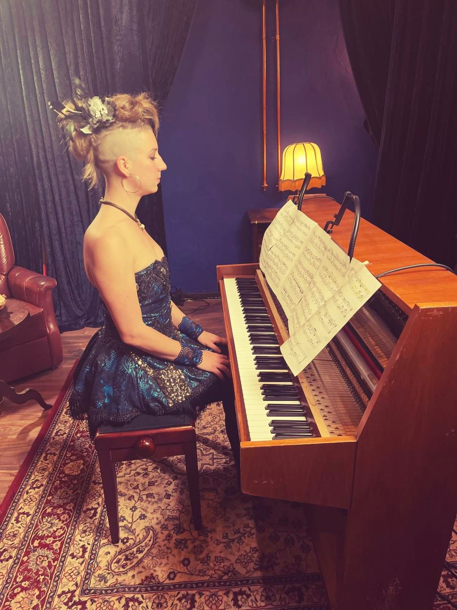

Which line-ups can I book?
Solo piano, and the duo Danilo & Ley for bars, parties and stages. Both can be combined over the course of one event.
Piano, accordion and voice — a wide repertoire for weddings, receptions, bars and stages.

Ley has stood on stage for half a lifetime as a pianist, accordionist and singer, composing and arranging for various band projects. After six years of music studies in Berlin and Hamburg they completed a Master's in Music Therapy — a specialty in choosing and shaping music to create exactly the atmosphere an event needs.
Ley's playing is powerful and heartfelt without ever being intrusive, with a focus on neoclassic, pop and filmmusic. Favourite songs are always welcome.
Clicking play loads the video from YouTube (privacy-enhanced mode) — see Datenschutz.
A wide repertoire spanning pop, chansons, swing, soul, folk and jazz, adapted live to the room and the moment — an intimate set for receptions, or a full evening of entertainment.
Classical elegant, vintage-burlesque or in full drag: The duo loves extravaganza, serving not only in sound but also in looks — if you dare.
Enquire About the DuoClicking play loads the video from YouTube (privacy-enhanced mode) — see Datenschutz.
Solo piano, and the duo Danilo & Ley for bars, parties and stages. Both can be combined over the course of one event.
Favourite songs are always welcome. Send Ley your wishes in good time before the event and they will prepare an arrangement — for a wedding ceremony, a first dance or simply a song that matters to you.
Solo it is mainly neoclassic, pop and film music, powerful and heartfelt without ever being intrusive. The duo repertoire spans pop, chansons, swing, soul, folk and jazz.
Yes, that is a large part of Ley's work. As a trained music therapist they choose and shape the music around the moment: quiet during the ceremony, warm over dinner, livelier as the evening goes on.
That is the nicest booking of all: piano during the reception, a costumed walking act between courses, the LED show after dark — one artist, one invoice, one sound and visual world.